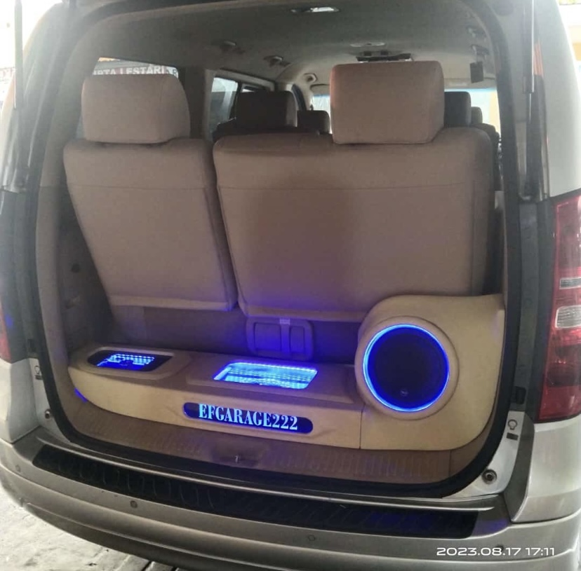
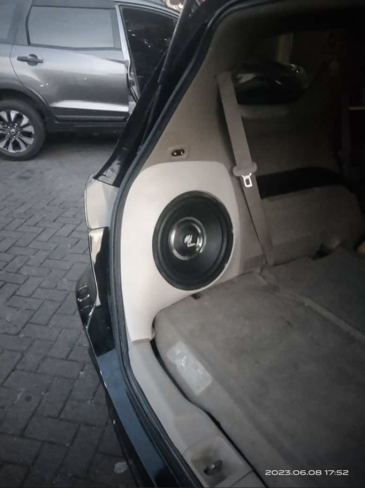
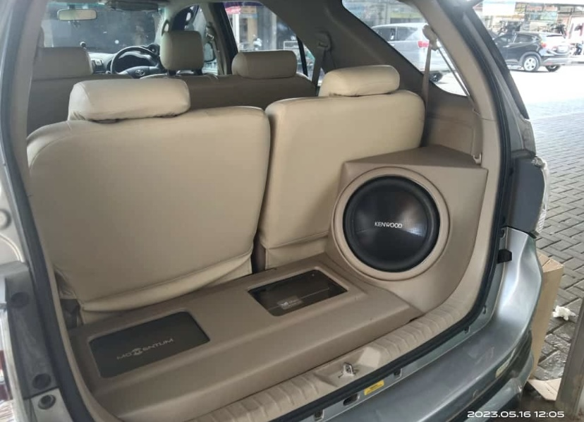
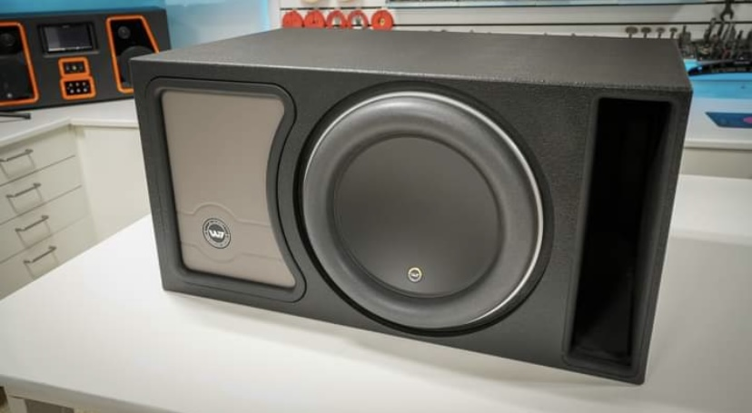
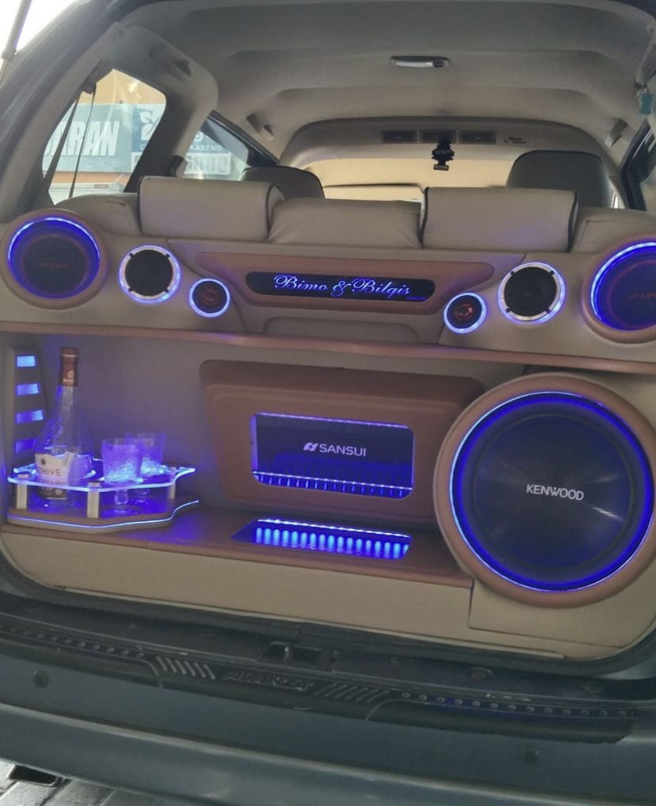
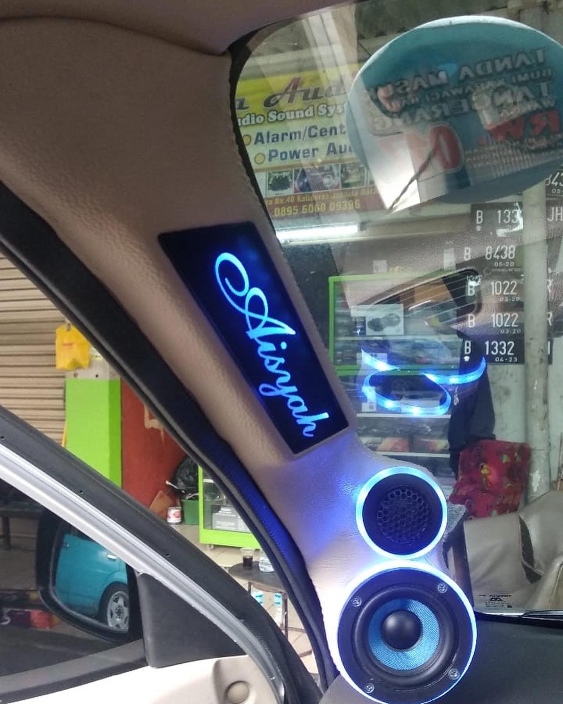
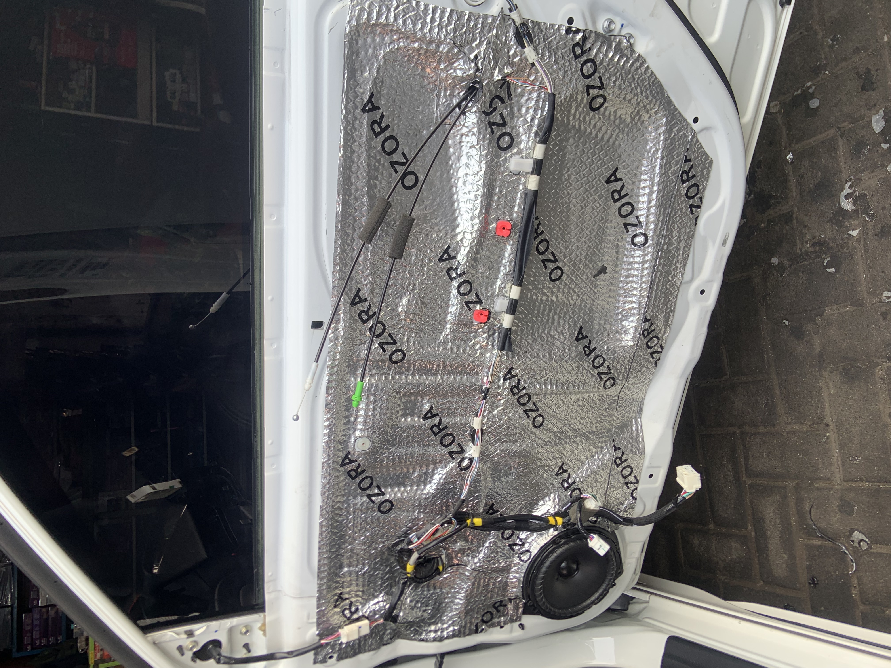
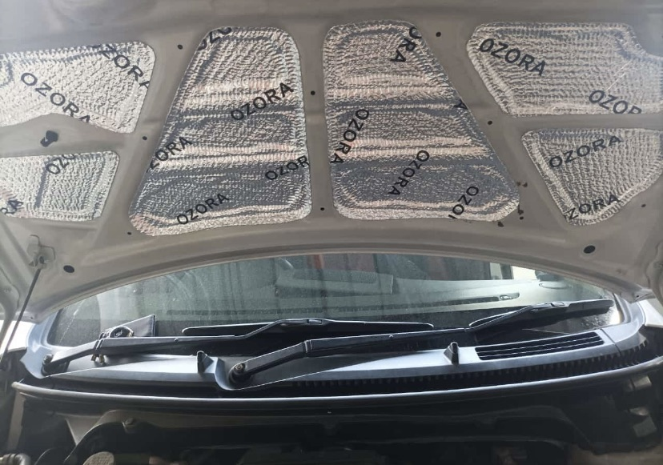
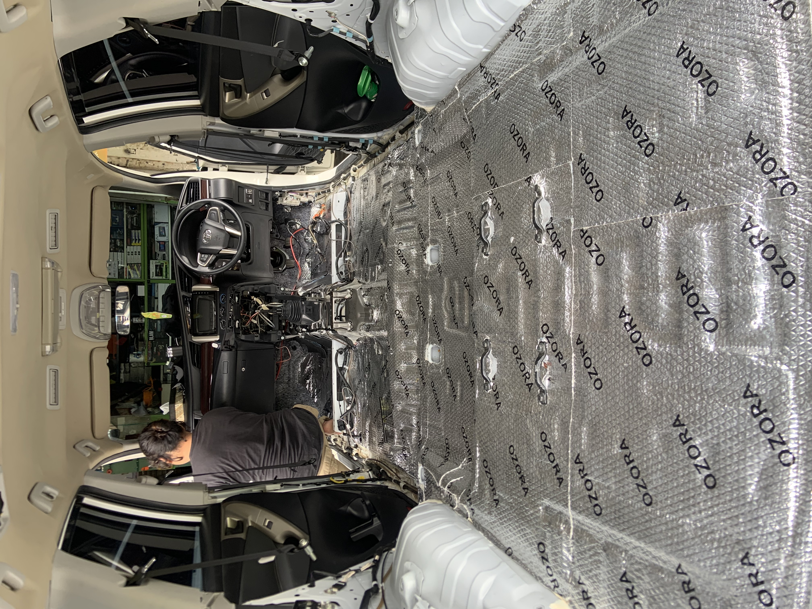

Spesialis audio mobil premium di Pasar Segar Kalideres. Rasakan pengalaman berkendara yang lebih hidup dan berkelas.
Konsultasi Gratis ReservasiSudah berdiri selama 21 tahun di bidang audio dan aksesoris mobil. Sudah menangani semua jenis mobil dan dikerjakan oleh ahlinya. Spesialis car audio & aksesoris, menyediakan: custom audio, power window, alarm/centralock, android mobil, power audio, dll.
Salsa Audio didirikan dengan satu misi: mengubah pengalaman mengemudi standar menjadi perjalanan audio yang imersif. Berlokasi strategis di Pusat Otopart Pasar Segar Kalideres, kami bukan hanya toko, kami adalah partner Anda dalam mencari kesempurnaan suara.
Kami hanya menggunakan produk berstandar tinggi, didukung teknisi berpengalaman yang ahli dalam instalasi rapi, tuning DSP presisi, hingga pengerjaan custom box & pilar yang detail.
Mendengar setiap instrumen dan vokal dengan kejernihan maksimal, tidak hanya sekadar keras.
Instalasi rapi dan custom box yang elegan meningkatkan estetika dan nilai jual kembali mobil Anda.
Audio yang harmonis mengurangi stres dan membuat perjalanan jauh terasa lebih nyaman dan menyenangkan.

Pembuatan box subwoofer presisi dan rapi.

Setting audio digital untuk panggung suara sempurna.

Pengerjaan pilar kosmetik 3-way dengan hasil rapi.

Penataan power amplifier dan kosmetik bagasi.

Estetika audio mobil yang elegan dan modern.

Pengalaman audio kelas atas di dalam mobil Anda.

Meningkatkan akustik pintu dan kualitas bass.

Meredam suara gesekan roda dan jalanan.

Mengurangi suara hujan dan kebisingan kabin.
Jadwalkan kedatangan Anda untuk menghindari antrean di workshop kami.
Hubungi kami secara langsung via WhatsApp untuk konsultasi dan booking jadwal:
Reservasi via WhatsApp